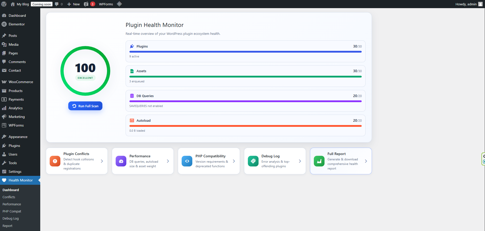
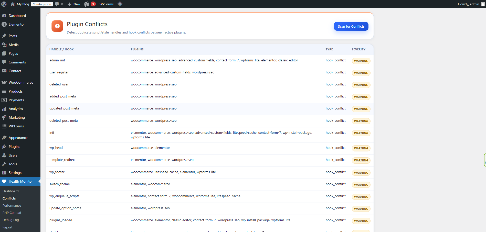
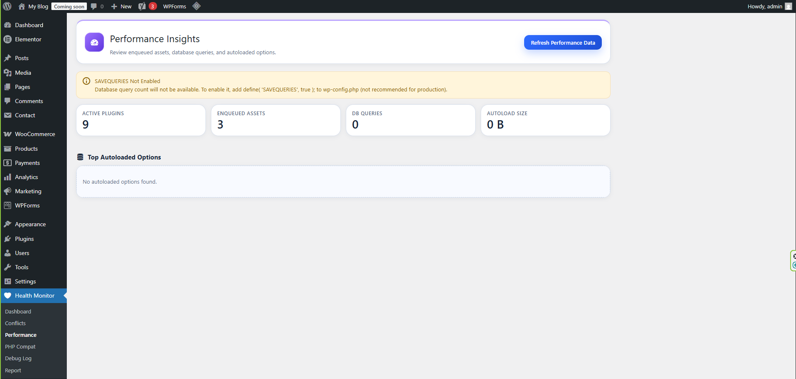
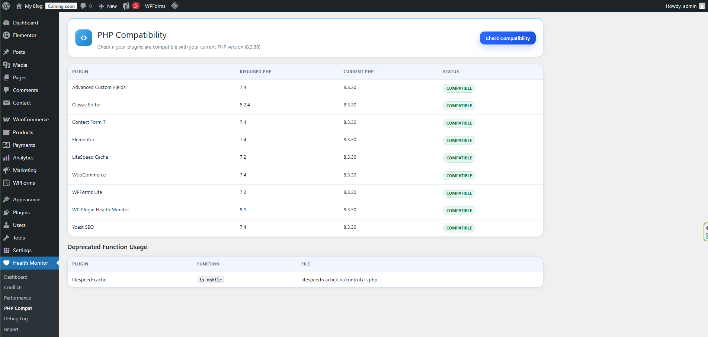
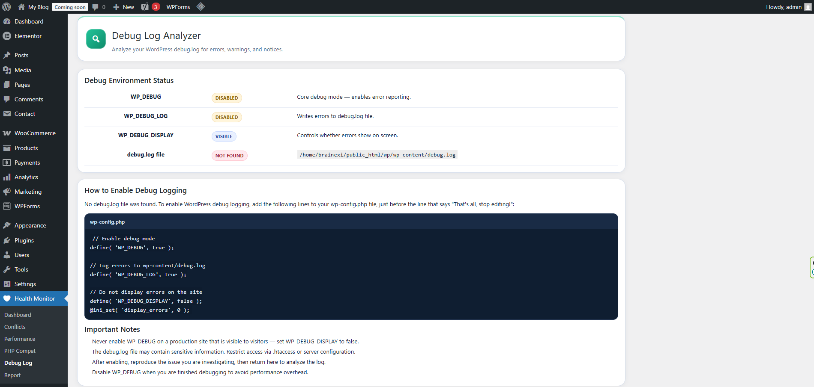
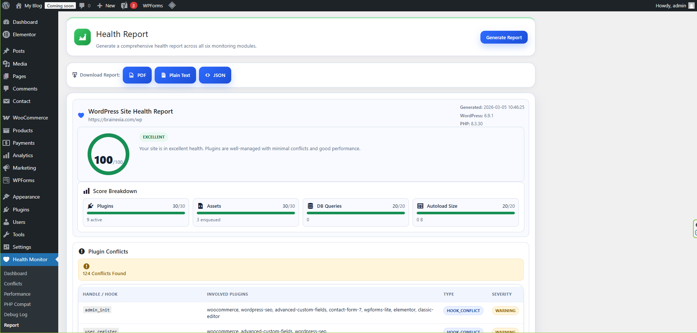

Health Radar
Know what your plugins are really doing. Audit conflicts, performance, PHP compatibility, and debug errors — all from your WordPress admin dashboard.
What It Does
Health Radar is a diagnostic plugin for WordPress administrators and developers. It audits installed plugins across six dimensions and surfaces problems before they reach end users.
$wp_scripts and $wp_styles for duplicate source files. Detects hook collisions in $wp_filter.SAVEQUERIES, and autoload bloat.Requires PHP header and compares against the active PHP version. Flags deprecated function usage.debug.log, categorizes as Fatals / Warnings / Notices, and attributes errors to the originating plugin.md5_file(). Recognizes jQuery, Lodash, Moment.js, and Chart.js signatures.Detection only. This plugin never modifies plugin files, settings, or hook priorities. All scans run on-demand — nothing runs automatically on page load.
Screenshots






Installation
WordPress Dashboard
- 1Go to Plugins → Add New Plugin
- 2Search for
Health Radar - 3Click Install Now, then Activate
Manual Upload
- 1Download
wp-plugin-health-monitor.zipfrom the Releases page - 2Go to Plugins → Add New Plugin → Upload Plugin
- 3Select the ZIP file → Install Now → Activate Plugin
Via WP-CLI
bashwp plugin install wp-plugin-health-monitor --activate
Download
Server Requirements
| Requirement | Minimum |
|---|---|
| WordPress | 6.3 |
| PHP | 8.1 |
wp-content/ | Read permission (for debug.log) |
Getting Started
- 1After activation, a Health Radar menu appears in the WordPress admin sidebar
- 2Navigate to Health Radar → Dashboard
- 3Click Run Full Scan to generate your first health report
- 4Review your Health Score and explore each module
Scan results are cached for 1 hour. Use the Re-scan button on any page to force a fresh scan.
Dashboard
The Dashboard provides a high-level overview of your site's plugin health with a composite 0–100 score.
What It Shows
| Element | Description |
|---|---|
| Health Score Gauge | 0–100 composite score from four weighted factors |
| Score Breakdown | Individual scores for plugins, assets, DB queries, autoload |
| Module Summary Cards | Quick status for all six modules |
| Run Full Scan | Triggers a fresh scan across all modules |
Score Colors
| Score | Status |
|---|---|
| 80–100 | Healthy |
| 50–79 | Needs attention |
| 0–49 | Critical issues |
Conflicts
Duplicate Asset Conflicts
Scans $wp_scripts and $wp_styles globals for the same src URL registered under different handles. Shows: conflicting handles, file type (script/style), and originating plugins.
Hook Conflicts
Inspects $wp_filter for two or more plugins attaching callbacks to the same action or filter hook. Shows: hook name, priority, callback names, and plugin file paths.
Severity Levels
| Severity | Meaning |
|---|---|
| High | Same file loaded twice — definite performance impact |
| Medium | Multiple callbacks on same hook — potential behavior conflict |
| Low | Informational — worth reviewing |
Performance
Enqueued Assets
Counts all enqueued JavaScript and CSS files. Estimates total payload size from local file sizes on disk.
Database Queries
Measures total DB query count for the current page load. Requires SAVEQUERIES to be enabled in wp-config.php.
php// Add to wp-config.php — staging/development only define( 'SAVEQUERIES', true );
Only enable SAVEQUERIES on staging environments. It increases memory usage and slows production sites.
Autoloaded Options
Queries wp_options for all rows where autoload = 'yes' and calculates total byte size. High autoload size adds overhead to every page load.
Performance Thresholds
| Metric | Excellent | Moderate | Poor |
|---|---|---|---|
| Plugin count | ≤10 (30 pts) | 11–20 (20 pts) | 21+ (10 pts) |
| Asset count | ≤15 (30 pts) | 16–30 (20 pts) | 31+ (10 pts) |
| DB queries | ≤30 (20 pts) | 31–60 (10 pts) | 61+ (5 pts) |
| Autoload size | <1 MB (20 pts) | 1–3 MB (10 pts) | >3 MB (5 pts) |
PHP Compatibility
Version Compatibility
For each installed plugin: reads the Requires PHP header from get_plugins(), falls back to parsing readme.txt, and compares against PHP_VERSION.
Deprecated Function Scanner
Scans each plugin's PHP files for usage of known deprecated WordPress core functions (WP 5.3 through 6.5).
| Function | Deprecated in |
|---|---|
wp_blacklist_check() | WP 5.5 |
wp_no_robots() | WP 6.1 |
get_page() | WP 6.2 |
wp_get_loading_attr_default() | WP 6.3 |
_wp_get_current_user() | WP 6.4 |
the_block_template_skip_link() | WP 6.4 |
_register_remote_theme_patterns() | WP 6.5 |
Scanner Limits
| Limit | Value |
|---|---|
| Max PHP files per plugin | 500 |
| Max file size scanned | 256 KB |
Debug Log
Enable Debug Logging
php// Add to wp-config.php define( 'WP_DEBUG', true ); define( 'WP_DEBUG_LOG', true ); define( 'WP_DEBUG_DISPLAY', false );
What It Shows
| Element | Description |
|---|---|
| Log file status | Existence and size of wp-content/debug.log |
| Error summary | Counts of Fatals, Warnings, and Notices |
| Top offending plugins | Up to 5 plugins with the most errors (via stack trace matching) |
| Recent entries | Last 50 log entries with timestamp, type, message, and file |
Scanner Limits
| Setting | Value |
|---|---|
| Max bytes read (from tail) | 1 MB |
| Recent entries shown | 50 |
| Max entries retrievable | 200 |
Generate Report
Aggregates all module results into a single page: site URL, WP version, PHP version, timestamp, Health Score, conflicts, duplicate assets, PHP compatibility, and debug log summary.
Export Options
| Format | How |
|---|---|
| Click Print Report (Ctrl+P / Cmd+P) — browser print dialog | |
| JSON | wp healthmonitor report --format=json |
How the Health Score Works
The Health Score is a composite 0–100 value calculated by WPHM_Health_Scorer::get_score() from four weighted dimensions.
| Dimension | Max | Excellent | Moderate | Poor |
|---|---|---|---|---|
| Plugin count | 30 | ≤10 → 30 | 11–20 → 20 | 21+ → 10 |
| Enqueued assets | 30 | ≤15 → 30 | 16–30 → 20 | 31+ → 10 |
| DB queries | 20 | ≤30 → 20 | 31–60 → 10 | 61+ → 5 |
| Autoload size | 20 | <1 MB → 20 | 1–3 MB → 10 | >3 MB → 5 |
If SAVEQUERIES is not enabled, the DB dimension returns its minimum (5 pts) to avoid a misleadingly high score.
WP-CLI Commands
Pipeline Example
bash# Get health score as JSON and filter with jq wp healthmonitor report --format=json | jq '.health_score.total' # List all duplicate assets wp healthmonitor report --format=json | jq '.conflicts.duplicate_assets' # Fail CI if health score is below 60 SCORE=$(wp healthmonitor report --format=json | jq '.health_score.total') if [ "$SCORE" -lt 60 ]; then echo "Health score too low: $SCORE" exit 1 fi
Caching
All scan results are cached using WordPress transients to avoid re-running expensive operations on every page load.
| Transient Key | Module | TTL |
|---|---|---|
wphm_health_score | Health Scorer | 1 hour |
wphm_conflict_results | Plugin Scanner | 1 hour |
wphm_performance_results | Performance | 1 hour |
wphm_php_compat_results | PHP Checker | 1 hour |
wphm_debug_log_results | Debug Log Reader | 1 hour |
wphm_duplicate_asset_results | Asset Analyzer | 1 hour |
wphm_last_report | Report Generator | 1 hour |
All transients are automatically deleted when the plugin is deactivated. WP-CLI commands bypass the cache and always run fresh scans.
Security
check_ajax_referer() on all AJAX handlers
manage_options required on all admin pages
esc_html(), esc_attr(), esc_url() everywhere
$wpdb->prepare() on all raw SQL
realpath() before any file read to prevent path traversal
ABSPATH guard in every PHP file
Privacy
This plugin does not collect, transmit, or store any data outside of the WordPress site it is installed on. No telemetry. No tracking. No external API calls. Zero outbound HTTP requests.
All scan data is stored locally in WordPress transients and automatically deleted when the plugin is deactivated.
FAQ
SAVEQUERIES is set to true in wp-config.php. The plugin never enables this on its own. Use it on staging environments only.wp-config.php. Set WP_DEBUG and WP_DEBUG_LOG to true and ensure WP_DEBUG_DISPLAY is false.debug.log and matches it against known plugin directory names under wp-content/plugins/.SAVEQUERIES for DB query counting should only be done on staging environments.wp healthmonitor report --format=json to get machine-readable JSON output. Pipe to jq for filtering and integrate into any automated pipeline or monitoring script.Developer Reference
Plugin Constants
| Constant | Value |
|---|---|
WPHM_VERSION | 1.0.0 |
WPHM_PLUGIN_DIR | Absolute path to plugin directory (trailing slash) |
WPHM_PLUGIN_URL | URL to plugin directory (trailing slash) |
WPHM_PLUGIN_BASENAME | wp-plugin-health-monitor/wp-plugin-health-monitor.php |
WPHM_MIN_PHP | 8.1 |
Class Overview
Hook Reference
| Hook | Type | Purpose |
|---|---|---|
plugins_loaded | Action | Plugin initialization via wphm_init() |
plugins_loaded | Action | WP-CLI command registration |
init | Action | Text domain loading |
| Activation hook | — | PHP version check and option setup |
| Deactivation hook | — | Transient cleanup |
Text Domain
textwp-plugin-health-monitor
Translation files go in the languages/ directory. Follows standard WordPress i18n conventions using __(), esc_html__(), and _e().